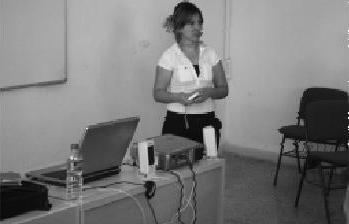

Seminerler esnasında kendimi çok heyecanlı ve mutlu hissediyorum, insanlara bir şeyler anlatmanın yanında onlarla bilgiyi paylaşmanın mutluluğunu her seminerimde yaşıyorum. Başkaları için ne yapabilirim diye düşünen insanların buluştuğu yerlerden biri de TUP'tur. Hayatımda bir dönüm noktası, miladımdır. İnsanlara ulaşmak için bir adımdı benim için TUP. (Hatice Dilek)
Hatice'de tam bir uğur böceği kalbi var. "Kime, nasıl iyilik yaparım?" diye düşünür hep. Proje gelişsin diye en çok çaba gösterenlerden biridir. Hatice'nin hayatı mücadele ruhuna iyi bir örnek. Bence kanatları olmalı.